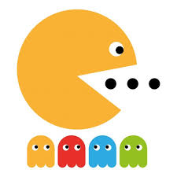

re-creation of the classic Pac-Man game
This game was created as a class project in Brooklyn College, CISC 3140.
I worked with a team of students to re-create the classic game Pac-Man.
Use your arrow keys to play. Stay away from the Ghosts or you will lose a life!!
For this project we used HTML and CSS on a 2d canvas board with Javascript to manipulate the display and movements of the game.